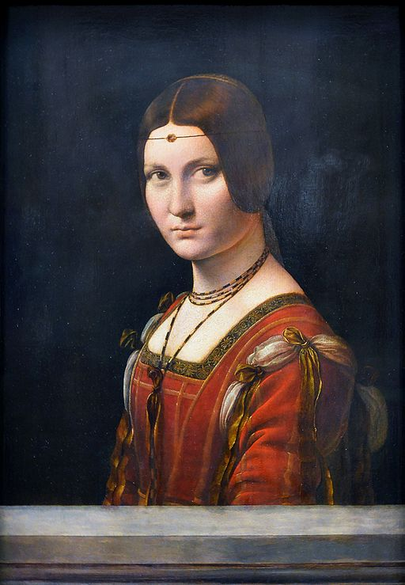

<head>
<meta charset="UTF-8" />
<meta name="keywords" content="drawing, painting" />
<meta name="description" content="drawings by Sunjy" />
<title>Sunjy</title>
<link rel="shortcut icon" type="image/x-icon" href="../../mImages/mCommon/favicon.ico" media="screen" />
<link rel="stylesheet" type="text/css" href="../../mCsses/mCommon/mCssA.css" />
<link rel="stylesheet" type="text/css" href="../../mCsses/mCommon/mCssB.css" />
<link rel="stylesheet" type="text/css" href="../../mCsses/mCommon/mCssC.css" />
<link rel="stylesheet" type="text/css" href="../../mCsses/mCommon/mCssD.css" />
<link rel="stylesheet" type="text/css" href="../../mCsses/mContent/mCssA.css" />
<link rel="stylesheet" type="text/css" href="../../mCsses/mContent/mCssB.css" />
<link rel="stylesheet" type="text/css" href="../../mCsses/mContent/mCssC.css" />
<link rel="stylesheet" type="text/css" href="../../mCsses/mContent/mCssD.css" />
</head>
<script type="text/javascript" src="../../mScripts/mContent/mContentAA.js" /></script>
<script type="text/javascript" src="../../mScripts/mContent/mContentAB.js" /></script>
<script type="text/javascript" src="../../mScripts/mContent/mContentAC.js" /></script>
<script type="text/javascript" src="../../mScripts/mContent/mContentAD.js" /></script>
<script type="text/javascript"></script> 
<script type="text/javascript">
document.write('<div class="mImgAbsolute"></div>');
/*
document.write('<p class="mFontSizeBColor" />From a white paper...</p>');
document.write('<table class="center"><tr><td>');
document.write('');
document.write('</td></tr></table>');
*/
</script>


<script type="text/javascript">
document.write('<p class="mFontSizeBColor" />La Belle Ferronnière</p>');
document.write('<p class="mFontSizeSColor" />By Leonardo da Vinci. “La belle ferronnière” is the portrait of an unknown woman, and her identity is shrouded in mystery.<br><br>“La belle ferronnière” was known as “Portrait of an Unknown Woman” as early as the seventeenth century, and it was believed that the sitter was the wife or daughter of an ironmonger or “a ferronnier.”<br><br>Thus one possible story to explain the title of the portrait.<br><br>However, it was also popularly claimed that the title alluded to a reputed mistress of Francis I of France, married to a certain Le Ferron.<br><br>The tale is a legend of revenge in which the aggrieved husband intentionally infects himself with syphilis, which he passes to the King by infecting his wife.<br><br>To add to this confusion in titles and identities, Leonardo’s “Lady with an Ermine,” had also been known, for a while, by this name “La Belle Ferronnière.”<br><br>The legend of revenge and the title were applied to “Lady with an Ermine.” The confusion was facilitated by the ornament worn on a delicate chain across the forehead, called a ferronnière.<br><br>Both women had headbands in their portraits. This coincidence led to the miss-naming of the “Lady with an Ermine” painting. The owner wanted to embellish their art with the revenge legend.<br><br>More recent claims point to the portrait as possibly depicting Beatrice d’Este, wife of Ludovico Sforza.</p>');
document.write('<table class="center" /><tr><td>');
document.write('<br>“La belle ferronnière” was known as “Portrait of an Unknown Woman” as early as the seventeenth century, and it was believed that the sitter was the wife or daughter of an ironmonger or “a ferronnier.”<br><br>Thus one possible story to explain the title of the portrait.<br><br>However, it was also popularly claimed that the title alluded to a reputed mistress of Francis I of France, married to a certain Le Ferron.<br><br>The tale is a legend of revenge in which the aggrieved husband intentionally infects himself with syphilis, which he passes to the King by infecting his wife.<br><br>To add to this confusion in titles and identities, Leonardo’s “Lady with an Ermine,” had also been known, for a while, by this name “La Belle Ferronnière.”<br><br>The legend of revenge and the title were applied to “Lady with an Ermine.” The confusion was facilitated by the ornament worn on a delicate chain across the forehead, called a ferronnière.<br><br>Both women had headbands in their portraits. This coincidence led to the miss-naming of the “Lady with an Ermine” painting. The owner wanted to embellish their art with the revenge legend.<br><br>More recent claims point to the portrait as possibly depicting Beatrice d’Este, wife of Ludovico Sforza." />');
document.write('</td></tr></table>');
</script>


